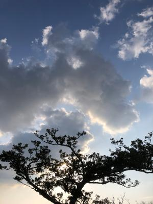

うるがいの話 ある日
最新: ヒエラルキー【うるがいの話 ある日】とは 一日だけのプログです
『うるがいの話』の最新一日だけのプログで、通信料が少なく経済的だ。カニの画像をクリックすると全ての日付が載る『うるがいの話』サイトを表示します
|
|
【うるがいの話】 うるがい(ｳﾙｶﾞｲ urugai)とは、『もずくがに』の名前でとても大きくなります。 |
|---|---|
|
|
【カミマヤーの話】 猫のことを方言でマヤーといいます。カミマヤー（kamimayaa）とは、神の猫のことです。 |
|
【たながぁの音楽】 たながぁ（ﾀﾅｶﾞｰtanagaa）とは手長えびのことで、何種類かあり大きいのは車 エビぐらいになります。 |

|
【ぶながぁの話】 ぶながー(bunagaa)とは、赤い髪の毛、赤い身体、そして身長は１ｍ２０ｃｍ ぐらい、川の蟹を食べているの目撃された。場所は沖縄県国頭郡大宜味村のと ある村僕の隣近所に住んでいる爺さんから、聞いた話です。 |
|
|
【ギーマの話】 ギーマ(giima)とは、山原の里山に咲くスズランに似た、 花を付けます。実は食べられます、 気が付くと口の周りが紫になっています。 |
2022年04月08日 (金）ヒエラルキー
16:29

成毛 眞著の『４０歳を過ぎたら、三日坊主でいい。 新・ミドルエイジ論』
新卒で商流の川上にある会社、業界のヒエラルキーのトップに位置する会社に
入っていたら最強だ。川上とは、たとえば自動車産業でいうならトヨタや日産
などではなく、トヨタやに素材を供給する板金やガラス、夕イヤのゴムなどを
つくっている会社を指す。
ジョン・コートル著の『記憶は嘘をつく』より引用
記録管理人と神話の作り手
自伝的記憶がヒエラルキーの形でまとまっていたとしても、それは驚くにはあ
たらない。結局のところ、記憶の入れ物である脳そのものも、部分的ではある
けれど、同じような形で組織化されていることが、しだいに明らかになってい
るのだ。
ん？、『ヒエラルキー』とはなんだんだ、たまに目にする言葉けどたまたま２
冊を交互に読んでいるとシンクロしたのか目にした。
ヒエラルキーとは、「階層」「階級制」を意味する言葉。しかし、基本的には
社会における「ピラミッド型の階級組織構造」を指します。
１６時２３分 ビットコインの総資産 ￥１５、６６９↑